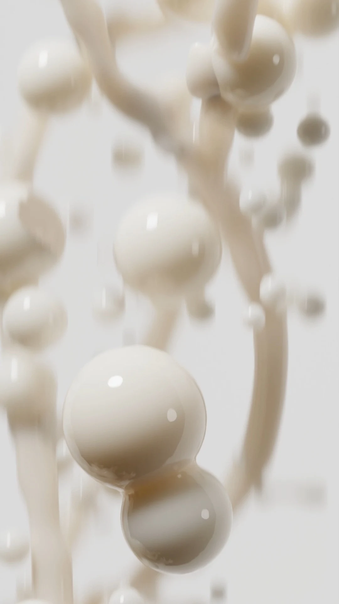
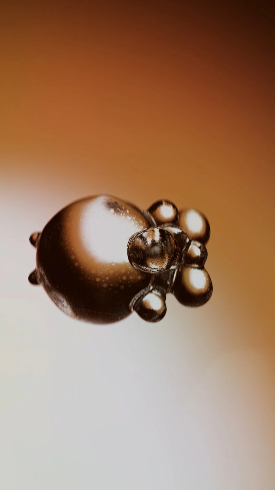
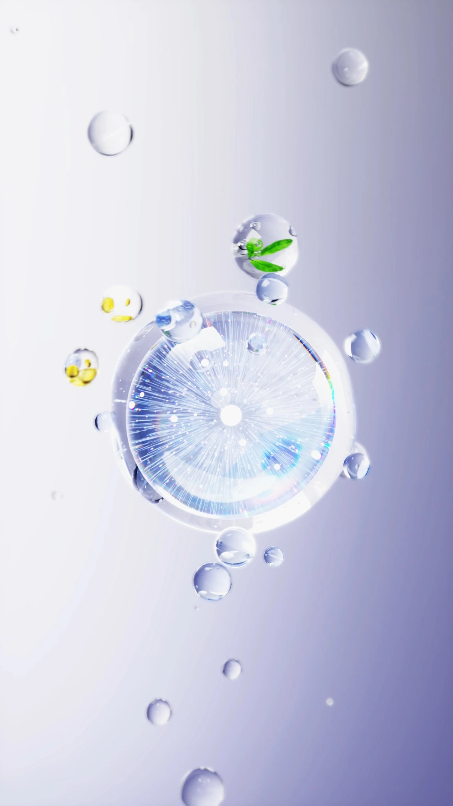
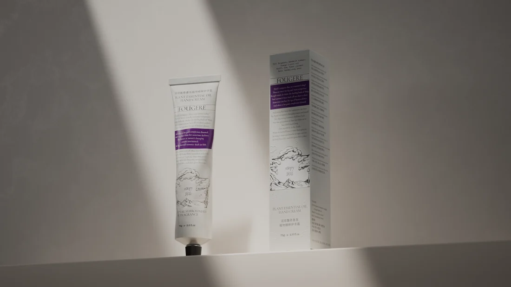
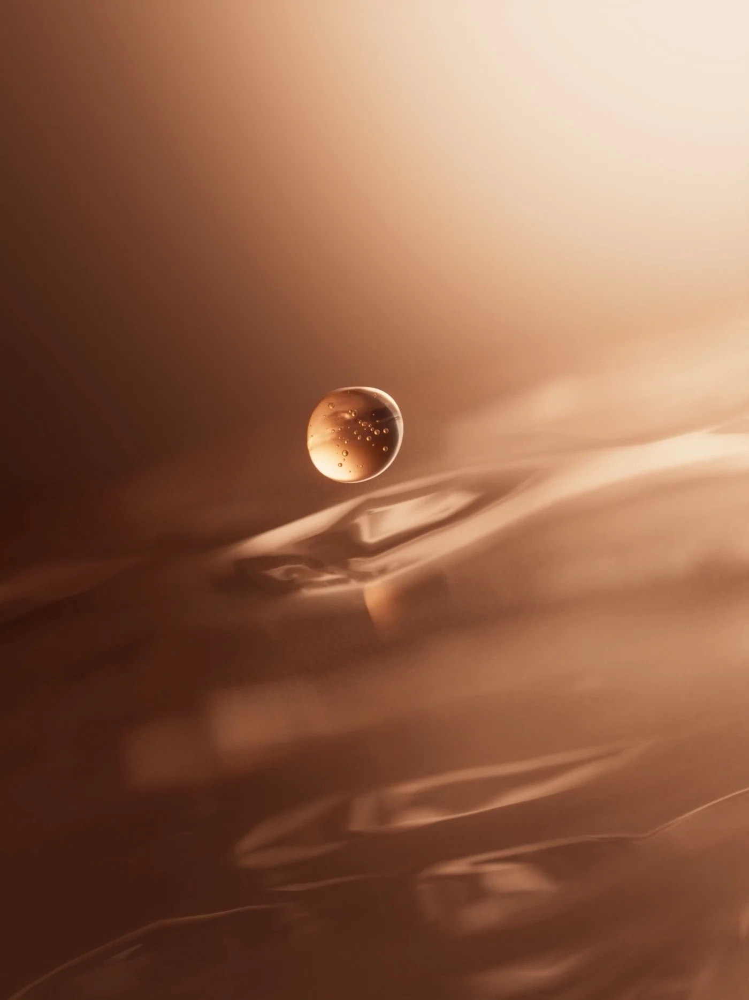
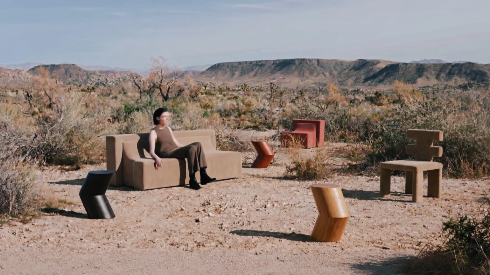
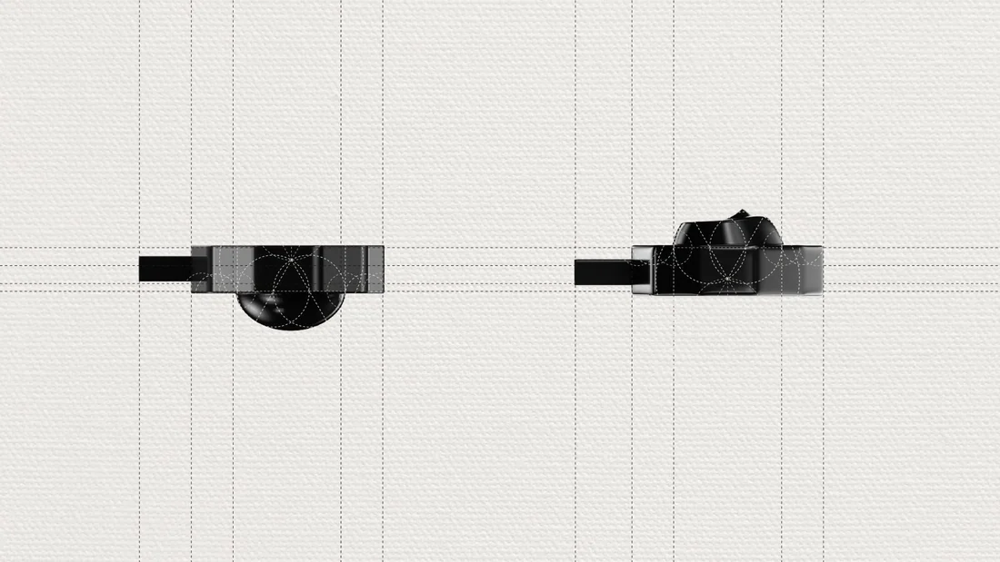
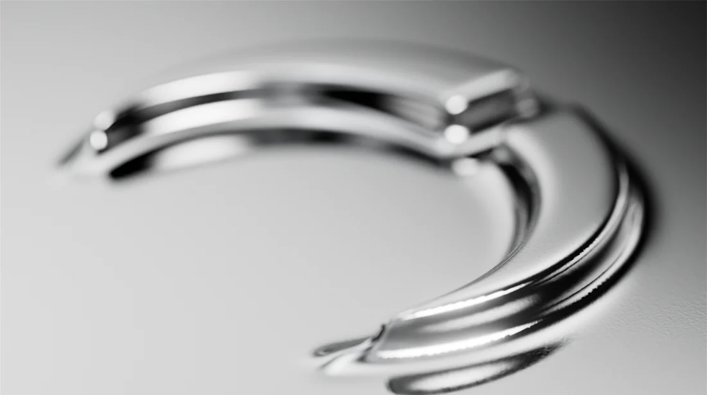

实验室RESEARCH / OPEN ENDED
关于材质、光影、运动，以及一切值得继续探索的可能。








[ ALWAYS CURIOUS. ALWAYS IN PROGRESS. ]
[ ABOUT THE DESIGNER ]
我是 XIAOYOU，一名关注产品、材质与运动的三维设计师。做包装，也做会动的画面。
01 / 我关注的
产品怎样出现，材质怎样被看见，镜头怎样让一个小物件变得有记忆点。在理性的结构与感性的表达之间，寻找新的可能。
02 / 创作方向
[ START A CONVERSATION ]
把项目的方向、时间与期待整理成一份简报，让下一次沟通更有灵感。
仅在当前页面整理，点击后复制；不会在线发送或保存。